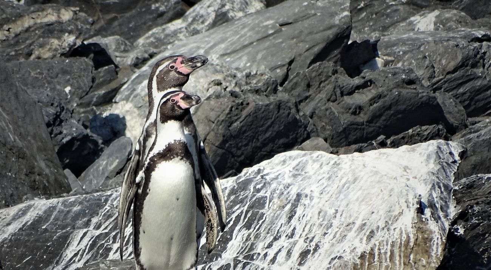

ConservaciónEspecie chilena en riesgo
Chile concentra gran parte de las colonias reproductivas del pingüino de Humboldt y su conservación es clave para la supervivencia de la especie.
La disminución de colonias, la pesca, la contaminación, el cambio climático y la pérdida de hábitat mantienen a esta ave marina en una situación crítica.